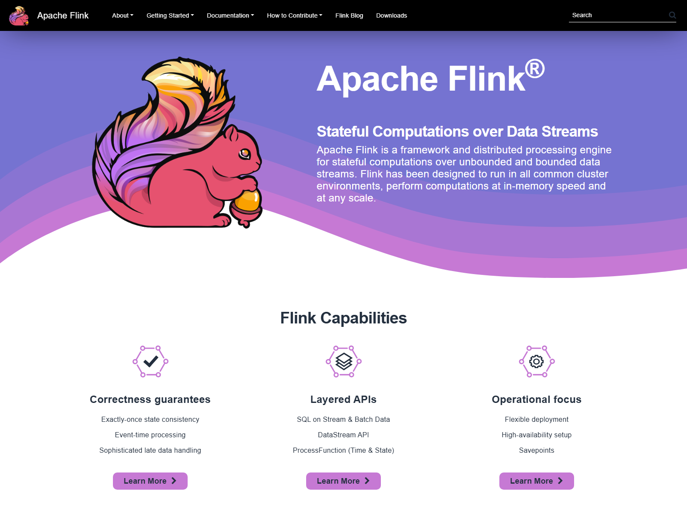
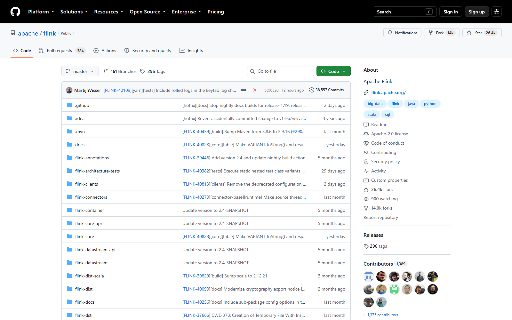
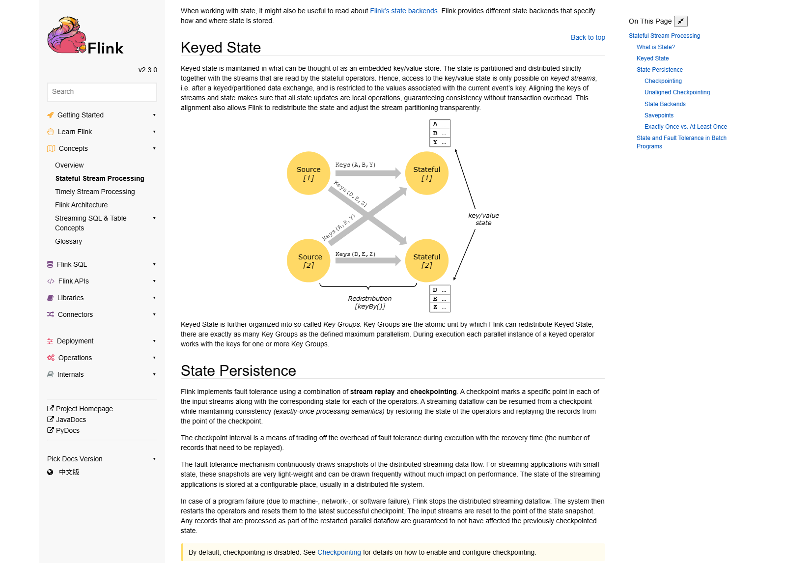

OSS PROJECT INTRO · APACHE FLINK 系列第 1 期：认识项目
今天开启新项目 Apache Flink——官网给它的一句话定位是 Stateful Computations over Data Streams，数据流上的有状态计算。实时计算这块业务，自己写过流式消费者的人都懂：数据乱序、进程挂了怎么办、中间结果往哪放，这三座山每一座都能把"简单统计"做成"分布式难题"。Flink 的答案是把状态管理、时间语义、容错快照做进同一个运行时，让你用几行 DataStream 代码拿到"算得准、挂了不丢、状态自己管"的实时计算。一句话心智模型：Flink 是一台把流处理的脏活脏坑全部内置的流计算引擎。本期结束，你能答上四个问题：流处理难在哪、Flink 的定位是什么、它与微批路线的本质差异在哪、什么信号出现时该把它请进你的架构。
"把每条订单实时统计进大屏"——这个需求听起来一页纸就能写完，但只要数据量上了一个量级，你会接连撞上三座山。第一座山是乱序。数据的产生顺序和到达顺序几乎必然不一致：手机弱网、消息队列分区重试、机器时钟漂移，都会让 10:01 的事件比 10:02 的更晚到。按"到达时刻"做统计，高峰期一笔补传的旧订单就能把你的小时曲线画歪；按业务时间算，你又不知道"该等到什么时候"才能确认这个窗口的数据齐了。
第二座山是容错。实时作业 7×24 小时跑，机器总要挂、发布总要停。重启之后问题来了：已处理的数据重算一遍会重复计入，直接跳过又会丢失，"不多算不少算"（exactly-once 语义）在分布式环境里是个实打实的技术难题。第三座山是状态管理。计数、去重、窗口聚合、双流 Join，中间都要"记住"些什么：状态放内存，进程一挂全丢；放外部存储，每条数据一来一回两次网络往返，吞吐立刻塌掉。三座山叠在一起，就是大多数团队第一次自研实时计算的体验： demo 一天，生产一年。Flink 的存在意义，就是把这三座山的解法变成基础设施。
Apache Flink 是一个开源的流计算框架与分布式处理引擎，官网定位原文："a framework and distributed processing engine for stateful computations over unbounded and bounded data streams"——对有界和无界数据流做有状态计算。它源自 2010 年前后的 Stratosphere 研究项目，2014 年成为 Apache 顶级项目，主语言 Java，Apache-2.0 许可，商用零负担。项目的顶点目录挂着一只彩色松鼠，社区里大家叫它"Flink 松鼠"。

拆开官方定位，三个词组就是三把钥匙："unbounded and bounded"——无界流是常态，有界批处理也能跑，一套引擎流批一体；"stateful"——状态管理是一等公民，Flink 替你把状态存在算子本地内存或磁盘（RocksDB），随数据量伸缩而不是每条去查外部库；"distributed"——并行度、调度、容错、快照全是运行时的活，你的代码只写业务逻辑。一句话心智模型：你写"对每条数据做什么"，Flink 负责在分布式集群里"算得快、记得住、挂了不丢"。
来源注记——flink.apache.org 首页与 What is Flink 页（2026-09-30 核对）：定位语 Stateful Computations over Data Streams；GitHub apache/flink 仓库（2026-09-30 核对）：Star 约 26.4k · Fork 约 14.0k · 主语言 Java · Apache-2.0 许可。
这张图是整个系列的地图：数据流从左进右出，中间方框里就是你写的算子；算子下面垫着三块地基——状态让"记住中间结果"不用外挂存储，时间让"按业务时刻统计"不被网络抖动带偏，快照让"进程挂了"变成一次普通的故障恢复而不是数据事故。你在第 01 节撞的三座山，在这里一一有了着落；这也是"有状态计算"五个字的分量所在。第 3 期我们会把这层运行时拆开看：JobManager 怎么调度、快照怎么流动、三层执行图怎么生成。
聊流计算绕不开的另一条路线是微批：把无界流按时间切成一小段一小段的"迷你批处理"，每段跑一遍批作业。这条路线复用批引擎、运维心智省力，但"批"的基因决定了它的天花板。两条路线的核心差异：
| 维度 | 逐条真流（Flink 路线） | 微批路线 |
|---|---|---|
| 处理模型 | 事件驱动，数据到了立刻处理 | 时间驱动，攒一小段一起跑 |
| 端到端延迟 | 毫秒级（处理完即输出） | 秒级起步（下个批次才输出） |
| 时间语义 | Event Time 一等公民，Watermark 原生 | 按批边界近似，事件时间精度受限 |
| 状态管理 | 运行时内置，算子本地存取 | 常需外挂存储补状态能力 |
| 流批一体 | 同一套 DataStream 代码，流批两种执行模式 | 批是本职，流是"高频批" |
把差异说人话：微批是把"流"翻译成"批"来借批引擎的力；真流是把"批"降解成"流"的原生形态。延迟表上的数字只是表象，真正的分野在时间语义——微批的世界里没有"数据还没到齐"这个概念，因为每个批次开跑时就默认它到齐了；而 Flink 用 Watermark 显式回答"等到什么时候"，乱序与迟到第一次有了正式的处理框架。监控大屏这类秒级容忍的场景，微批完全够用；风控、告警、实时特征这些对"准"和"快"同时敏感的场景，差异开始兑现。
以 2026-09-30 官网口径为准，Flink 正处在 2.x 新主线 + 1.20 LTS 双轨期。2.0 于 2025-03-24 发布，是个"清账"式的大版本：移除了长期废弃的 Scala API 与 DataSet 独立 API，默认 Java 17。当前版本线：
| 版本线 | 当前小版 | 定位 |
|---|---|---|
| Flink 2.3 | 2.3.0（2026-06-25） | 官方 Latest，本系列基准 |
| Flink 2.2 / 2.1 / 2.0 | 2.2.1 / 2.1.3 / 2.0.2 | 2.x 存量线，连接器生态仍在补齐 |
| Flink 1.20 | 1.20.5（2026-06-03） | LTS 长期支持线，存量生产主力 |
| Java 支持 | 11 / 17 / 21 | 官方文档口径：Java 17 为 2.0 起默认与推荐版本，Java 21 实验性 |
两个值得写进笔记的口径：第一，Scala API 已成历史。2.0 起官方移除 Scala API，新项目一律走 Java API（社区另有维护的 flink-scala-api 第三方包）。下载页二进制包名里的 scala_2.12 后缀只是发行包内部依赖的 Scala 版本，不代表 Scala 数据集 API 还在。第二，连接器与内核版本要配套看。官方下载页按"Flink 版本 × 连接器版本"给兼容矩阵，例如 Kafka Connector 5.0.0 官方标注兼容 2.1.x 与 2.2.x，2.3 专用版尚未发布（2026-09-30 口径）——选型时内核新、连接器旧是 2.x 期的常态，动手前先查矩阵。
来源注记——flink.apache.org/downloads（2026-09-30 核对）：2.3.0 Latest、1.20.5 LTS、各连接器兼容矩阵；nightlies.apache.org 2.3 文档（2026-09-30 核对）："You need Java 11, 17, or 21"、Java 17 自 2.0 起为默认；2.0 发布公告（2025-03-24）：移除废弃 Scala API。发行包命名 flink-2.3.0-bin-scala_2.12.tgz。
Flink 主仓库之外，Apache Flink 官方还维护一圈子项目，选型时它们决定"生产上多省心"：

社区现状一句话：大数据圈里活跃度最高的一档。GitHub 26.4k Star、每年一个 feature 主版本的发布纪律、从研究项目走到全球实时计算事实标准之一——十多年里它扛住了从"学术新星"到"生产基石"的全部考验。国内实时数仓、风控、大屏场景里，Flink 的渗透率尤其高，这也是本系列把它排进微系列的实用理由。
Flink 不是"所有实时需求的默认答案"，它是"实时需求变复杂后的收敛点"。给一个三问决策框架：
反过来，三个"可以先不用"的信号：只是把消息从一个队列搬到另一个队列、无状态转发，普通消费者就够；秒级延迟完全容忍、逻辑就是简单聚合，微批路线门槛更低；一次性离线批分析，批引擎的本职主场。第 3 期讲核心概念与架构，第 4 期做一个 Kafka 订单流实时大屏的完整实战，第 5 期进源码看 Checkpoint 怎么跑——五期之后，上面三问你可以自己回答。
每题点击选项立即反馈 · 共 3 题
1. Apache Flink 官网的一句话定位是？
2. 流处理三座山里，"该等到什么时候才确认窗口数据齐了"属于哪座？
3. 关于 Flink 2.x 的版本口径，下列哪个说法符合官方文档？
先把微批的合理性说透：它把"无界"翻译成"有界"，批引擎的调度、容错、Shuffle 全部复用，工程师用一套心智同时覆盖离线和近实时——在延迟容忍度是秒级、逻辑是简单聚合的场景里，微批是理性选择，不值得嘲笑。但翻译是有损耗的，损耗体现在三层。第一层是延迟的结构性下限：数据要等下一个批次才被处理，攒批间隔就是延迟地板，毫秒级场景从模型上就不成立，不是调参能救的。第二层是时间语义的近似：批次开跑即默认"到齐"，迟到数据的归属只能靠补丁式方案近似，而 Event Time + Watermark 是把"等到什么时候"变成一整套显式协议——这层差异在金融口径、计费、风控上直接体现为"算得对不对"。第三层是状态的重视程度：微批时代状态常被降格为"批间共享的临时结果"，外挂存储是常规操作；Flink 把状态当一等公民，本地存取、自动快照、随规模伸缩，复杂有状态逻辑（双流 Join、大窗口、CEP）才写得出来、扛得住量。价值边界由此清晰：延迟敏感、时间语义严格、状态逻辑复杂这三个条件命中越多，真流路线的复利越大；一个都不命中，微批甚至普通消费者更务实。路线没有信仰，只有场景匹配——这也是判断一个团队实时架构成熟度的试金石：能说清"什么时候不用 Flink"的团队，才是真的把 Flink 用明白了。
逐座山对号入座。乱序山：消费者按"到达顺序"累计 Redis 计数器，消息队列重试、分区并行都会让旧事件晚到，晚到的加一遍、去重无从谈起，数字自然漂移。Flink 的解法是 Event Time：从订单里取业务时间戳，Watermark 声明"这个时刻之前的数据到齐了"，窗口按业务时间切、迟到数据走侧输出，口径由协议保证而不是靠运气。容错山：发布或崩溃后，定时任务从哪继续全凭口口相传：Redis 里的计数是半新半旧的，重放消息会翻倍，不清空就回退。Flink 的解法是 Checkpoint：状态周期性快照到分布式存储，恢复时回到最后一次快照、从源端对应位置重放——"不多算不少算"由机制保证。状态山：Redis 在这个架构里其实是在客串"外部状态层"，每条消息一次网络往返，高峰期既是瓶颈又是单点。Flink 的解法是把状态放进算子本地（HashMapStateBackend 或 RocksDB），读写走内存或本地磁盘，规模大了加并行度而不是换更大的 Redis。额外红利是运维面：三件拼图（消费者、定时任务、Redis 契约）收敛成一个声明式的 Flink 作业，监控、恢复、扩缩容都有标准动作。但也要诚实说代价：团队要学一套新的概念体系（并行度、Watermark、状态后端、Checkpoint 调优），小规模场景这套投入未必划算——数字对不上的痛越真实，换引擎的收益越快兑现。
带走这五句话：

下期预告：第 2 期《5 分钟跑起来》——下载 Flink 2.3.0 起一个本地集群，打开 Web UI，用官方 DataStream API 教程写出并跑通你的第一个流作业，顺手把 Checkpoint 的第一行配置和"常见报错第一套解法"收进兜里。
Primary source：Apache Flink 官方文档 2.3（nightlies.apache.org）——本期版本口径、Java/Scala 支持与组件现状均出自官网与官方文档（v2.3.0，2026-09-30 核对）；版本发布记录见 flink.apache.org/downloads，源码见 github.com/apache/flink。